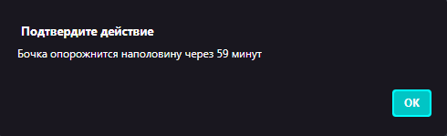

Операторы циклов «While»
Чтобы понять как работает цикл «While» в JavaScript, разберём следующую задачу:
"Из бочки ёмкостью 350 литров через сливное отверстие вытекает каждую минуту 3 литра воды. Через какое время бочка опорожнится наполовину?"
Начальные значения: v = 350; t = 0;
Cинтаксис цикла while:
while(/* условие. Выполняется пока верно. */){ /* Тело цикла */ }
Результат:

Сохраните файл в вашей личной папке